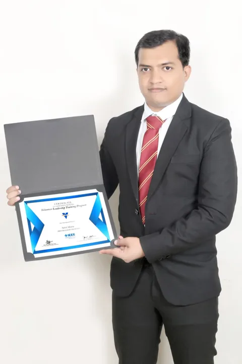

↗ View gallery · 04IEEE VoLT: learning to lead globally
IEEE Volunteer Leadership Training
Completed IEEE’s Volunteer Leadership Training program, developing skills in leadership, ethics and program management.
Explore the story
The work
Worked with an international team of IEEE volunteers and learned from experienced community leaders and mentors.
The contribution
A foundation for leading volunteer programs with purpose, integrity and stronger cross-cultural collaboration.
Link to this story